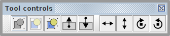
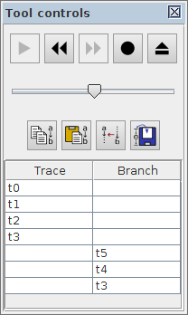
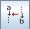

Tool controls
Tool controls provide access to the extended functionality (if present) of a selected tool. Of the generic tools only the Selection tool and Simulation tool have such extended functionality. The former uses a compact toolbar while the later utilises a panel to present the simulation information. Let us overview both these types of tool controls in more detail.
Selection controls toolbar
The selection tool controls provide the means to transform the selected nodes and connections of the model.

") - group selection
- group selection
- combine the selected elements into a group. The same action can be performed by pressing Ctrl+G.") - page selection
- page selection
- combine the selected elements into a page. The same action can be performed by pressing Alt+G.- - ungroup selection
- if a single group is selected, then pressing this button decomposes the group into the comprising elements. The same action can be performed by pressing Ctrl+Shift+G. - - level up
- if the focus is currently inside a group, then pressing this button shifts the focus to the container group or the root of the model. The same can be done by pressing Page↑ or double-clicking outside the group boundaries. - - level down
- if a single group is selected, then pressing this button enters this group. The same can be done by pressing Page↓ or double-clicking inside the group boundaries. ") - flip horizontal
- flip horizontal
- flip the selected objects horizontally. The same can be done by pressing Ctrl+F.") - flip vertical
- flip vertical
- flip the selected objects vertically. The same can be done by pressing Ctrl+Shift+F.- - rotate clockwise
- rotate the selected objects clockwise. The same can be done by pressing Ctrl+R. - - rotate counterclockwise
- rotate the selected objects couterclockwise. The same can be done by pressing Ctrl+Shift+R.
Note the difference between groups and pages. Groups are just unnamed decorations for several nodes, while pages are named nodes containing other nodes. The nodes in different groups still should have unique names, while pages provide namespaces for their included nodes. Therefore nodes in different pages can have the same local name, e.g. there may be node n1 in pages p1 and p2 with the full names p1/n1 and p2/n1 respectively.
Simulation controls panel
The simulation tool controls provides the means to analyse and navigate the simulation data. There are two sources of simulation data:
- Trace - the base sequence of events, often from an external tool, e.g. a trace leading to a deadlock.
- Branch - the deviated sequence of events executed by explicitly clicking the excited nodes of the model.
Usually the event names correspond to the model nodes whose execution changed the state of the model. The sequences of events are recorded in the corresponding columns of the Trace–Branch table. You can click the name of the event in either column to restore the model state just before that event has happened.

The navigation through the simulation data can be done with the following buttons:
- / - play through the trace / pause trace playback
- execute the trace and branch events starting from the current position. - - step backward
- undo the last event that lead to the current state, can be performed via shortcut [. - - step forward
- execute the next event in the trace or branch, can be performed via shortcut ]. - / - generate a random trace / stop trace generation
- automatically execute events selecting them randomly from a pool of events that are enabled in the current state. - - reset the trace
- stop the execution and reset the trace and branch data. - - copy to clipboard
- copy the trace, the branch and the current simulation state into the clipboard.  - paste from clipboard
- paste from clipboard
- paste the trace, the branch and the current simulation state from the clipboard.-  - merge branche into trace
- merge the branch into the main trace. - - save current state as initial
- save the current state of the model as its initial state.
The slide bar under the navigation buttons controls the speed of playback for the existing or randomly generated sequence of events.